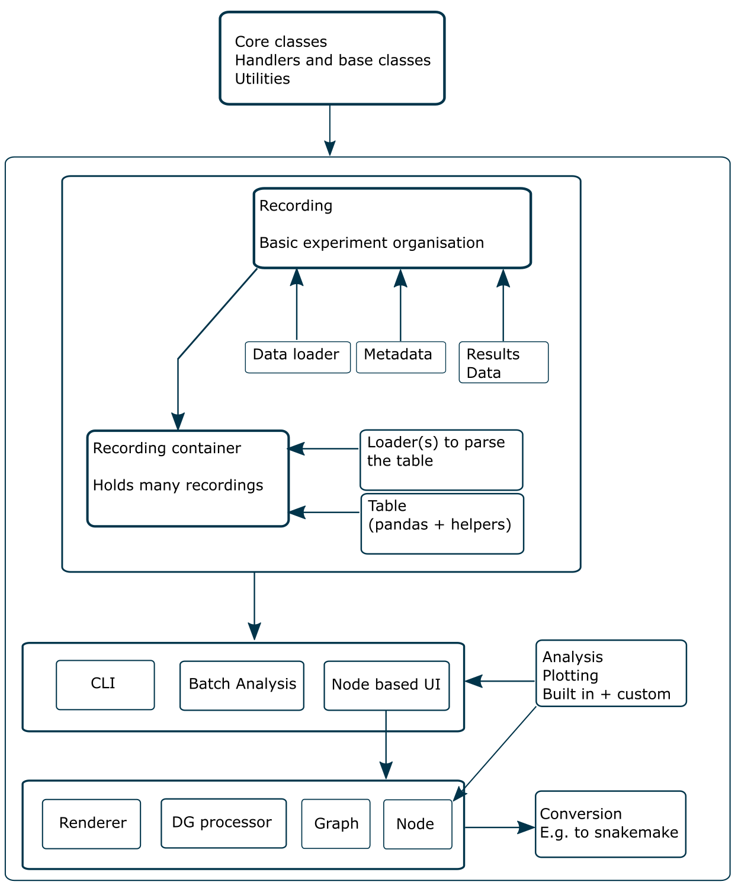

SIMURAN#
Here is a paper on a tool - I should also definitely check this out https://www.nature.com/articles/nmeth.3041
The main aim of SIMURAN is to remove the need for people to code standard data management, file selection methods, batch coding, multiprocessing, etc. and simply focus on the analysis that they want to perform, facilitating performing large analyses on multi-region data.
To use it, one provides the program with a description of their data, how to load that data if it is not an already supported format, what analysis to perform on the data, and what to save from the analysis (by default it saves everything).
This is close, but not quite accurate anymore
The program is heavily inspired by:
- NeuroChaT - Considering cells, lfps, spatial data, etc. as singular objects and coding the relationship between them to perform analyses.
- Inviwo (https://inviwo.org/) - How to add your own custom code into a project. Inviwo's method is to provide you with a folder which you can simply drag and drop any additional analysis into, which is very convenient.
- Sumatra (https://neuralensemble.org/sumatra/) - Keeping track of the code used to produce analyses. Basically it stores extra information when the code is run about the system used, time that was taken, code version, etc.
- SpikeInterface (https://www.biorxiv.org/content/10.1101/796599v2) - The code is structured similarly to theirs, they aim to provide code that works with any spike sorting format. The idea here is to provide code that works with any electrophys format.
- Snakemake.
- MNE-python.
User stories#
- As a non-programmer, I want to open the UI and create a network using drop in boxes to analyse files.
- As a non-programmer, I want to be able to view parameters and results from within the UI.
- As a programmer, I want assistance to create tables and parameter files in the correct format for the program.
- As a programmer, I want to take advantage of program structure to speed up my development.
Diagram of architecture#

Possible things to talk to#
- NeuroChaT
- MNE
- Elephant
- NWB NC?
GUI requirements#
- Dynamically adding nodes either via another window or a popup menu.
- Support custom nodes.
- Set parameters on nodes and use these for computation.
- Show plots on right click.
- Show tooltips of variables.
https://github.com/hoffstadt/DearPyGui - dear py gui.
Considerations#
- Implement converters
- Support NWB and ask about here https://nwb-overview.readthedocs.io/en/latest/tools/tools_home.html.
- This looks well written, should compare my program to it https://github.com/mouseland/cellpose.
- Phy would be another good place to check UI on https://github.com/cortex-lab/phy.
- Check how to add to colab e.g. https://colab.research.google.com/drive/1Qp7RAnPFj8zrhfEGkV7nHbzFiQ8w-4FX?usp=sharing for YASS.
- Check out integration of things like https://github.com/KordingLab/spykes.
- Should integrate decoding https://github.com/KordingLab/Neural_Decoding.
- Delete output folder if -o passed
- Clear STDout log on program start.
- Save after functions to different place
- New mode where parameters are not written! A read only mode.
- Improve SIMURAN help.
- Support tdqm progress bar or none.
- Restructure the project to adhere to new PEP guidelines, especially with typing. Related to this, check how to handle default values in classes instead of just using None, so as to adhere to typing (e.g. empty containers instead of None).
- This would be very helpful to integrate into the code https://mypy.readthedocs.io/en/stable/introduction.html
- When complete this work, try run with num_workers 4 and see if all results are same and evaluate time benefits.
- Really consider getting the code to work well within colab, or at least with data from the cloud.
- Clearer caching of results.
- Need to convert SIMURAN logging to rich https://github.com/willmcgugan/rich.
- Covert CLI to https://typer.tiangolo.com/.
- SIMURAN takes a VERY long time to load, should consider this.
- Intergrate the metadata set up with https://tutorials.datajoint.io/index.html.
- Consider using https://github.com/Delgan/loguru for logging.
- Use https://www.frontiersin.org/articles/10.3389/fninf.2011.00016/full for metadata.
- Integrate with snakemake https://snakemake.github.io/ - see references in https://f1000research.com/articles/10-33/v2 and usage example in https://gin.g-node.org/NIN/V1_V4_1024_electrode_resting_state_data
- https://coverage.readthedocs.io/en/6.3.2/
- Add more unit test cases
- List front facing functions
- Clean up the naming in main
- Add copy operations to the primary classes
- Use Python 3.10 to upgrade docstrings and use better type hinting.
- Can I make sumatra (with my changes) a subdependency or something?? (or maybe try change the original)
- Rebuild to CLI using Rich and typer.
- Favour xarray over astropy units?
- Use fixtures and parameterise.mark to improve the structure of the unit tests.
- Create a diagram (does not have to be UML) describing the layout of the Project.
- Show where the project simply follows pandas and numpy etc. conventions to be easy to use.
- What python versions will this support?
- Rename metadata to attrs (naming convention from other programs)
- Consider slots with dataclasses
- Xarray handles some things nicely which am considering e.g. attrs and support auto functions with specific naming.
- Review the SIMURAN init function.
- Consider adding documentation with https://myst-parser.readthedocs.io/en/latest/.
- Make sure diagrams from https://www.google.com/search?q=pyreverse&sourceid=chrome&ie=UTF-8 match up.
- Consider datajoint for making tables https://www.datajoint.org/.
- Use https://github.com/kemerelab/ghostipy instead of mne paper here https://www.eneuro.org/content/8/6/ENEURO.0202-21.2021.
- Rename the project, create a logo and a release.
- Remove dependency on skm_pyutils OR configure logging in skm_pyutils instead of print.
- Convert main to a class.
- update lfp_atn_workflow to match these changes.
- load_config SIMURAN alias.
- Fix issue with simuran import from a github pip installation.
- Integrate a snakemake wrapper into SIMURAN.
- Create interface for analysis.
Paragraph from Shane#
The results will be graphically displayed, as will the processing method. A click and drag interface will allow processing flow-charts to be constructed and reconstructed while the consequent results are seamlessly displayed and updated. Multi-route and branched flow-charts will be possible, allowing for easy comparison of different processing methods and different processing parameters. Dialogue boxes will offer explanation and detailed customisation of processing units. The automation will be done within Python, which has the advantage that many of the analysis tools already have freely available Python implementations.
Handling extra requirements#
xarray deals with optional requirements - see their installation documentation.
Specifically this line too "If you are using pip to install xarray, optional dependencies can be installed by specifying extras. Instructions for both pip and conda are given below."
Idea#
Simplifying creating a reproducibile and managable data analysis and processing pipeline in neuroscience.